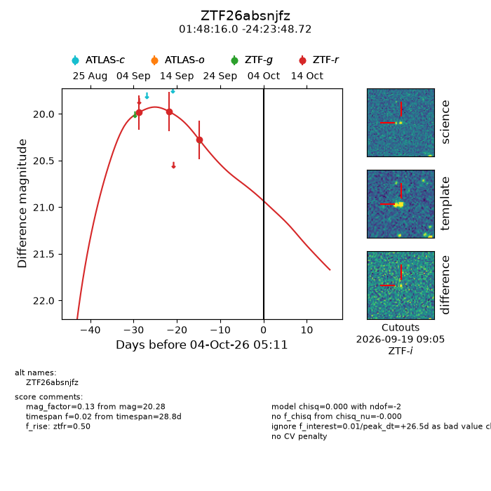
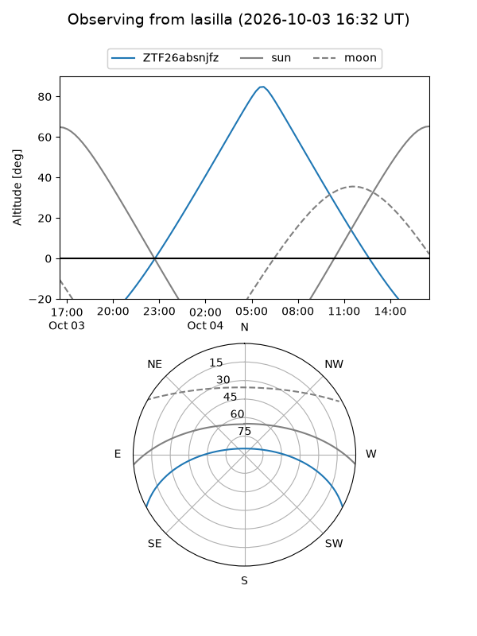
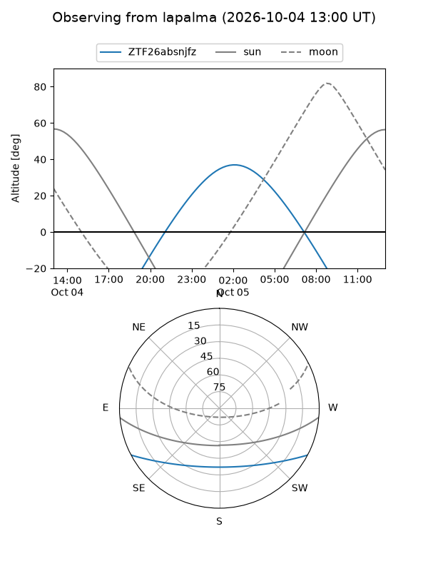
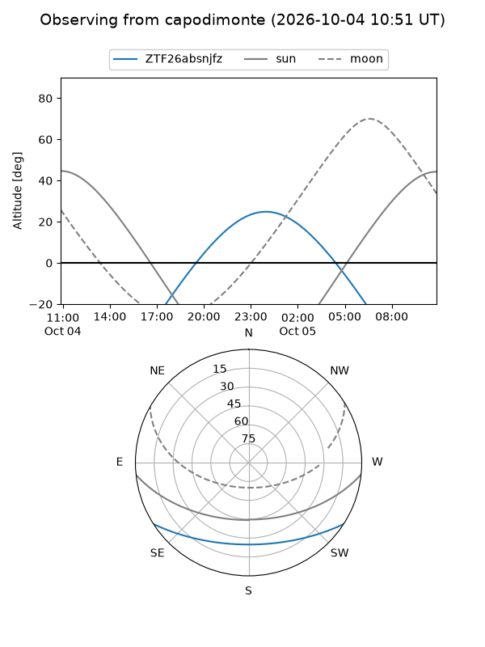
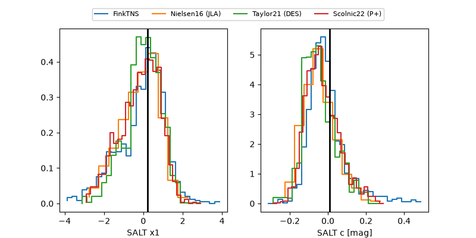

ZTF26absnjfz
Target ZTF26absnjfz at 2026-10-04 16:08
Aliases and brokers:
FINK-ZTF: ztf.fink-portal.org/ZTF26absnjfz
Lasair-ZTF: lasair-ztf.lsst.ac.uk/objects/ZTF26absnjfz
ALeRCE-ZTF: alerce.online/object/ZTF26absnjfz
Direct TNS query: direct search
alt names
ZTF26absnjfz (ztf,fink_ztf)
Coordinates:
equatorial (ra, dec) = 27.0668,-24.39687
equatorial (HMS+DMS) = 01:48:16.04,-24:23:48.72
galactic (l, b) = (204.0443,-76.92464)
Flags:
peak dt: +27.0
Photometry:
last ztfr=20.28
3 ztfr detections
Lightcurve

Visibility



Additional plots
